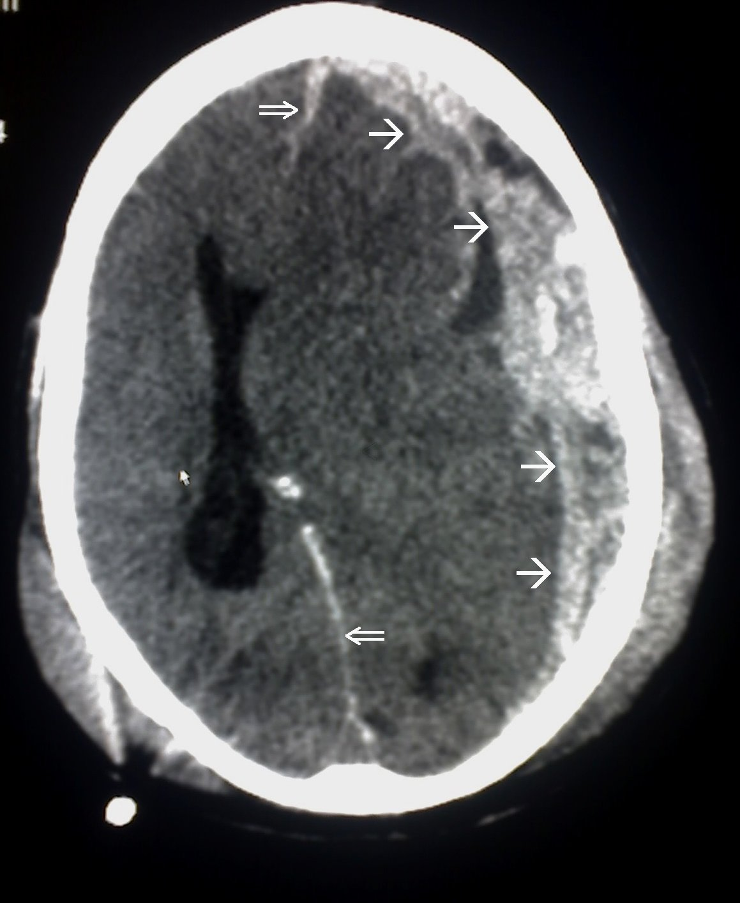
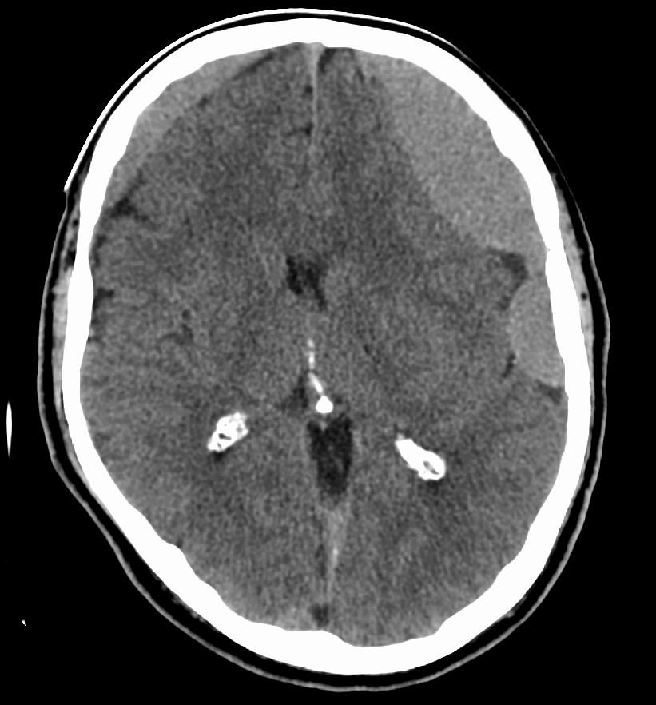
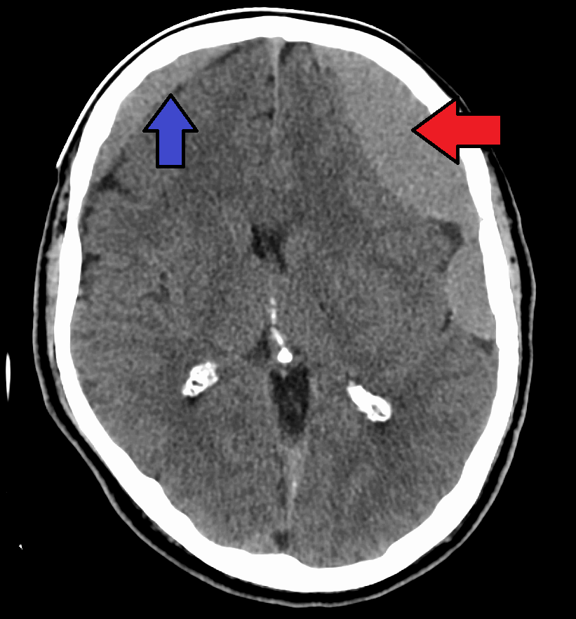

212 — Xuất huyết sọ: ICH/SAH/SDH/EDH & diễn tiến máu / Intracranial hemorrhage
Tags: pattern:xuat-huyet-so vung:so-nao score:GCS-ICH protocol:CT-so-nao
Mức chắc chắn (certainty): tổng hợp y văn (literature synthesis) — nhóm tự biên từ y văn mở, chưa gắn ca nguyên văn đơn lẻ.
1. Tổng quan — máu đông đặc tăng HU + hemoglobin đổi tín hiệu theo ngày
- Máu cục cấp trên CT không tiêm tăng tỷ trọng (hyperdense) 50–90 HU do globin đặc. Bảng 5 giai đoạn hemoglobin trên MRI (xem mục 3): tối cấp < 24 giờ (T1 đồng, T2 sáng) → cấp 1–3 ngày (T1 đồng, T2 tối đen) → bán cấp sớm 3–7 ngày (T1 sáng rực, T2 tối đen) → bán cấp muộn 1–4 tuần (T1 sáng rực, T2 sáng rực) → mạn > 4 tuần (T1 tối, T2/SWI tối đen).
- Ngưỡng mổ nằm lòng: lệch đường giữa (midline shift) > 5 mm, thể tích máu tụ công thức ABC/2 ≥ 30 mL trên lều hoặc > 3 cm dưới lều (tiểu não) + GCS tụt ≥ 2 điểm → hội chẩn mổ cấp cứu. Dấu xoáy (Swirl sign) trong máu tụ = máu không đông đang chảy hoạt tính → mổ tối khẩn; dấu đốm thuốc (Spot sign) trên CTA = máu tụ lan rộng.
- TẠI SAO vị trí quyết định cơ chế: SDH (đứt tĩnh mạch bắc cầu — bridging veins, chấn thương nhẹ/người già/te nghiện rượu) ôm bờ não; EDH (đứt động mạch màng não giữa — MMA sau vỡ xương thái dương) bóc màng cứng khỏi sọ.
2. Mẫu hình + chẩn đoán phân biệt theo khoang (Gamut)
- Nhu mô (ICH — intraparenchymal): tăng huyết áp (hạch nền/đồi thị/cầu não/tiểu não), amyloid (vỏ thùy, người > 55 tuổi tái phát), u/AVM (trẻ, phù + bắt thuốc quanh).
- Dưới nhện (SAH — subarachnoid): máu đầy bể đáy + rãnh Sylvius — vỡ phình (aneurysm) sau gắng sức/đau đầu sét đánh.
- Dưới màng cứng (SDH — subdural): liềm (crescent) ôm bờ, qua khớp sọ, lệch đường giữa sớm.
- Ngoài màng cứng (EDH — epidural): thấu kính (lens/biconvex), không qua khớp (dính màng cứng), qua được liềm, khoảng tỉnh (lucid interval) + vỡ xương thái dương.
3. Bảng so sánh phân biệt (ma trận đối chiếu)
| Thực thể (entity) | Hình ảnh điển hình | Chốt vào (rule-in) | Chốt loại (rule-out) | Gợi ý xác nhận |
|---|---|---|---|---|
| SDH cấp | Liềm tăng HU 60–80 ôm bờ, VƯỢT QUA đường khớp sọ nhưng KHÔNG vượt qua liềm đại não/lều tiểu não, chèn não | Liềm + chấn thương nhẹ/người già + vượt khớp + không vượt liềm | Thấu kính không qua khớp → EDH | CT lại sau 6 giờ (máu lan), mổ khi dày > 10 mm/lệch > 5 mm |
| EDH cấp | Thấu kính 2 mặt lồi, KHÔNG vượt qua đường khớp sọ nhưng vượt qua được liềm đại não, vỡ xương thái dương, dấu xoáy (Swirl) | Thấu kính + lucid + vỡ xương + MMA + Swirl = mổ tối khẩn | Liềm vượt khớp + không vượt liềm → SDH | CTA tìm giả phình MMA, mổ khi > 30 mL |
| SAH vỡ phình | Máu bể nền + rãnh Sylvius, não úng thủy sớm; Modified Fisher độ 1–4 | Đau sét đánh + máu bể nền dày ≥ 1 mm + máu não thất = độ 4 (nguy cơ co thắt mạch cao nhất) | Chỉ máu rãnh liềm đơn độc → chấn thương | CTA/MRA tìm phình, nimodipine + kẹp/coil |
| ICH tăng huyết áp | Hạch nền/đồi thị/cầu, HU 60–80, phù quanh; thể tích ABC/2 ≥ 30 mL | Hạch nền + tăng HA + tuổi; Spot sign = lan rộng | Vỏ thùy tái phát người già + nhiều vi xuất huyết vỏ-dưới vỏ trên SWI → bệnh mạch máu dạng bột (CAA) | CTA spot sign (chảy đang diễn), kiểm soát HA; CAA tránh kháng đông dài hạn |

Liềm tăng HU ôm bờ não, qua khớp sọ, đè đẩy nhu mô. Nguồn: Wikimedia Commons, public domain.
Hai liềm đẳng tỷ trọng 2 bên, não bị bó chặt. Nguồn: Doc James (James Heilman), CC BY-SA 4.0.Liềm vs thấu kính — cặp song sinh dễ nhầm
- SDH = liềm (crescent), VƯỢT khớp sọ, KHÔNG vượt liềm đại não/lều — đứt tĩnh mạch bắc cầu (bridging veins), chấn thương nhẹ cũng rách ở người già/te não.
- EDH = thấu kính (lens), KHÔNG vượt khớp sọ, VƯỢT được liềm — đứt động mạch màng não giữa (MMA) sau vỡ xương, khoảng tỉnh rồi hôn mê nhanh; Swirl sign = mổ tối khẩn.
Bảng 5 giai đoạn Hemoglobin trên MRI (bắt buộc)
| Giai đoạn | Thời gian | Dạng Hb | T1 | T2/SWI |
|---|---|---|---|---|
| Tối cấp | < 24 giờ | OxyHb nội bào | Đồng (iso) | Sáng (bright) |
| Cấp | 1–3 ngày | DeoxyHb nội bào | Đồng (iso) | Tối đen (dark) |
| Bán cấp sớm | 3–7 ngày | MetHb nội bào | Sáng rực | Tối đen |
| Bán cấp muộn | 1–4 tuần | MetHb ngoại bào | Sáng rực | Sáng rực |
| Mạn tính | > 4 tuần | Hemosiderin | Tối | Tối đen (SWI) |
4. Protocol chụp + hệ phân độ/điểm chuẩn hóa
- CT không tiêm lát mỏng (< 10 phút): HU + ABC/2 + lệch đường giữa mm + chèn bể đáy.
- CTA khi: SAH (tìm phình), ICH trẻ/không tăng HA (tìm AVM/u), spot sign (chảy đang diễn → mổ sớm).
- Thang điểm: GCS + ICH Score (0–6: GCS, tuổi ≥ 80, thể tích ≥ 30 mL, não thất, hố sau); Fisher/WFNS cho SAH.
flowchart TD
A[Chấn thương/đau đầu sét đánh] --> B{CT: liềm hay thấu kính?}
B -->|Liềm qua khớp| C[SDH: đo mm + lệch mm]
B -->|Thấu kính không qua khớp| D[EDH: tìm vỡ xương + mổ]
B -->|Máu bể đáy| E[SAH: CTA tìm phình]
5. Biến thể bình thường và cạm bẫy
- SDH bán cấp đồng tỷ trọng (Isodense SDH, tuần 1–3, 30–40 HU) rất dễ bỏ sót trên CT không tiêm — phải nhìn dấu đẩy lệch rãnh vỏ não không chạm bản sọ trong + lệch vách trong suốt, so phim cũ.
- Thang điểm SAH: Modified Fisher độ 1–4 (bề dày máu bể nền ≥ 1 mm + máu não thất = độ 4, nguy cơ co thắt mạch cao nhất); Fisher/WFNS + GCS + ICH Score (0–6: GCS, tuổi ≥ 80, thể tích ≥ 30 mL, não thất, hố sau).
- Giả SAH (pseudo-SAH) khi phù não nặng: rãnh sáng giả do sung huyết — HU thấp hơn máu thật, bối cảnh ngạt/tim ngừng.
- Vôi hóa sinh lý (pineal/choroid) giả máu — đối xứng + HU > 100 + phim cũ không đổi.
- Thiếu máu cục bộ sau chấn thương khuất sau máu — đừng dừng ở máu, tìm thêm phù/DWI.
6. Tự lượng giá — Blind Quiz
Ca 1 — Chấn thương đầu, GCS 13. Nhìn CT có mũi tên trước.
- Gợi ý lâm sàng (clinical context): tai nạn xe máy, đau đầu + lơ mơ nhẹ, không khoảng tỉnh.
- Câu hỏi: Mô tả dấu hiệu (finding) chính? Đưa 3 chẩn đoán phân biệt (differential)? Dấu hiệu nào chốt (clincher)?
Bấm để hiện đáp án (findings + chẩn đoán)
- Dấu hiệu (findings): dải tăng tỷ trọng hình liềm ôm bờ não một bên, qua khớp sọ, đè xẹp rãnh vỏ, lệch đường giữa nhẹ.
- Chẩn đoán (diagnosis): máu tụ dưới màng cứng cấp (acute SDH) — vì liềm + qua khớp (khác thấu kính EDH không qua khớp) + cơ chế tĩnh mạch cầu sau chấn thương.
- Nguồn ảnh: Wikimedia Commons (Trauma subdural arrows), public domain.
Ca 2 — Người già ngã nhẹ 3 tuần trước, nay lú lẫn 2 bên. Đọc CT trơn dưới đây.
Bấm để hiện đáp án (findings + chẩn đoán)

- Dấu hiệu (findings): hai dải đẳng/giảm tỷ trọng hình liềm 2 bên, xóa rãnh, não bó chặt, ít lệch đường giữa (cân bằng 2 bên).
- Chẩn đoán (diagnosis): SDH mạn 2 bên (bilateral chronic SDH) — vì đẳng HU + teo não người già + chấn thương nhẹ 3 tuần (hemoglobin đã thành hemosiderin/màng).
- Nguồn ảnh: Doc James, CC BY-SA 4.0 (bản trơn + annotated).
Ca 3 — Ngã + khoảng tỉnh 2 giờ rồi hôn mê + đồng tử giãn cùng bên, CT thấu kính thái dương không qua khớp: SDH hay EDH? Xử trí? (Bảng mục 3.)
Bấm để hiện đáp án (findings + chẩn đoán)
- Dấu hiệu (findings): thấu kính + không qua khớp + vỡ xương thái dương + lucid interval = rách động mạch màng não giữa.
- Chẩn đoán (diagnosis): EDH cấp chèn ép — mổ mở sọ cấp cứu (khác SDH liềm qua khớp có thể theo dõi khi mỏng).
Bài liên quan chéo
- 200 – Tổng quan Thần kinh
- 211 – Đột quỵ não (loại trừ máu trước tiêu sợi huyết)
- 213 – U não (máu trong u vs máu chấn thương)
Không dùng để chẩn đoán độc lập khi chưa có người hướng dẫn.